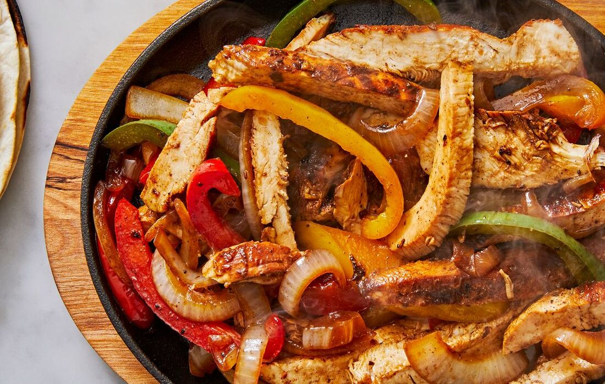

Chicken Fajitas Recipe
Instructions:
-
In a large skillet or frying pan, heat olive oil over medium-high
heat.
-
Add sliced chicken breasts to the skillet and season with salt,
pepper, and fajita seasoning. Cook until chicken is browned and
cooked through, about 5-7 minutes. Remove chicken from skillet and
set aside.
-
In the same skillet, add a bit more olive oil if needed, then add
sliced onions and bell peppers. Cook until vegetables are
tender-crisp, about 5 minutes.
-
Add minced garlic to the skillet and cook for another minute until
fragrant.
-
Return the cooked chicken to the skillet with the vegetables. Stir
well to combine and heat through for a couple of minutes.
-
Warm up flour tortillas in a separate skillet or in the microwave
according to package instructions.
-
Serve the chicken fajita mixture hot with warm tortillas and
optional toppings such as shredded cheese, sour cream, salsa,
guacamole, chopped cilantro, and lime wedges.
-
To assemble, place a spoonful of the chicken fajita mixture onto a
warm tortilla, add desired toppings, and fold it up into a burrito
shape.
- Enjoy your delicious homemade chicken fajitas!
Ingredients:
- 1 lb (450g) boneless, skinless chicken breasts, thinly sliced
- 2 tablespoons olive oil
- 1 onion, sliced
- 1 red bell pepper, sliced
- 1 green bell pepper, sliced
- 1 yellow bell pepper, sliced
- 2 cloves garlic, minced
- 2 tablespoons fajita seasoning (store-bought or homemade)
- Salt and pepper, to taste
- Flour tortillas
-
Optional toppings: shredded cheese, sour cream, salsa, guacamole,
chopped cilantro, lime wedges